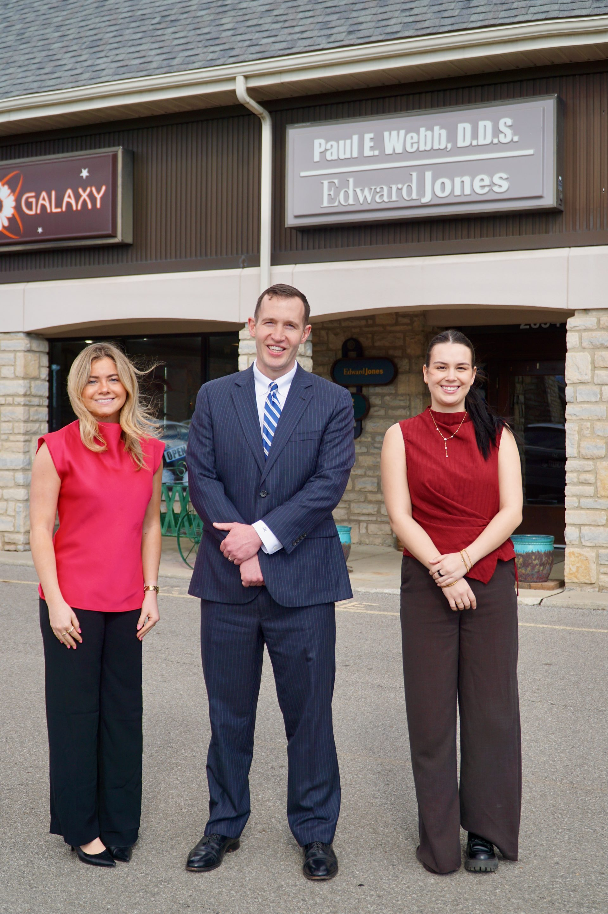

OSU Fisher College of Business · #8 Nationally Ranked
We connect, support, and advocate for WP MBA students — whether you're in your first semester or crossing the finish line.
Upcoming Events Contact the CouncilGive back to the community. The council is hosting a blood drive — every donation makes a real difference. Come out and participate with your fellow WP MBA students.
Join us for an evening celebrating community service and leadership among Fisher Graduate students. Nominations recognized, connections made, memories created.
Stop by for donuts and a chance to connect with Fisher's deans. A relaxed opportunity to meet leadership, share feedback, and start the week right.
Free professional headshots for graduate students — great for LinkedIn, your professional website, and conferences. Stop by any session to receive your free portrait.
Mon Apr 6 | 9AM–1PM | Graduate School Seminar Space (UH 250Q)
Fri Apr 10 | 9AM–1PM | Graduate School Seminar Space (UH 250Q)
Wed Apr 15 | 9AM–1PM | Biomedical Research Tower (BRT 130)
Tue Apr 21 | 12PM–4PM | Buckeye Commons

Don't let the cost of a cap & gown stand between you and the stage.
Fellow WP MBA student Joe Lotozo is running a Cap & Gown Bank out of his Edward Jones office in Upper Arlington. Currently stocked with three sets — and growing as more alumni donate.
Need a cap & gown for graduation? Reach out to reserve one and return it after the ceremony.
Already walked the stage? Pay it forward — drop off your cap & gown so another student can use it.
First come, first served. Contact Joe to check availability or arrange a donation.
Edward Jones — Tremont Center
2094 Tremont Center, Suite 4
Upper Arlington, Columbus, OH
(614) 874-2372
Ask for Joe or Emma
Your elected representatives for the 2026–2027 academic year — Working Professional MBA students from across central Ohio, balancing careers, families, and full course loads.
I previously served as Secretary for the Council, building invaluable connections with fellow Council members, WPMBA students, and peers across all Fisher Graduate programs. As President, I draw on experience from serving as President of the Multicultural Greek Council during my undergraduate years at OSU. I am continuing the social traditions established over the past year — Happy Hour, Tailgates — while expanding academic, professional, and philanthropic programming that works for both in-person and virtual students.
As Secretary, I bring both administrative and financial expertise to the Council. I previously worked as an office assistant, gaining experience with meeting coordination, minute taking, and complex calendar scheduling. In my current role in finance operations at the College of Public Health, I manage transactions and work directly with university financial service teams — a combination that serves the Council well.
As VP of In-Person, I am committed to the strength and growth of the WPMBA program. I focus on providing executive support to the President and ensuring the operational health of our council — particularly overseeing sustained programs like mentoring to ensure they continue delivering lasting value. I enjoy meeting and connecting with others, and I am working to build engagement across other Fisher Graduate programs and our alumni network, collaborating with the FTMBA, MAC, and MHRM councils to create a strong multidisciplinary community for every Fisher graduate student.
Networking and mentoring others are at the heart of my work as VP of Distance Learning. As a primarily online student, I am focused on connecting and advocating for distance learners across the Fisher community. With 10+ years of professional experience, I help students navigate the program and find career development opportunities — and am building relationships here that will continue well beyond graduation.
I bring a strong finance background to the Treasurer role — undergraduate finance major from Fisher, fundraising chair of Ohio State's student radio club, and multiple years in the financial services industry. My MBA elective focus is finance as well. As Treasurer, I am a committed team player focused on making the WPMBA program experience better for every student.
Returning to the Council in the Internal PR role, I bring a deep understanding of our cohort — what people respond to, what they care about, and how busy everyone is. I am focused on opportunities that strengthen cohort outcomes: career fairs, alumni gatherings, and recruiting sessions. More than halfway through the program, I am making the most of this time by building connections, supporting one another, and creating lasting memories. Here's to Buckeye Nation. O-H!
As a working professional and veteran, I bring a focus on strategic partnerships with local industry leaders to my role as External PR. I am formalizing frameworks for corporate partnerships — creating institutionalized pathways for onsite visits and collaborative initiatives so every student has direct, recurring access to the Columbus business ecosystem. I am also working to transform seasonal career fair interactions into year-round engagements, and coordinating high-caliber speakers that fit our professional schedules.
As Alumni & Graduate Coordinator, I focus on building meaningful, lasting connections within the Fisher community. As a lifelong Upper Arlington resident and Ohio State alumnus, I am deeply invested in strengthening ties between current WPMBA students and Fisher alumni. My work as a CFP® professional and financial advisor centers on building long-term relationships and creating opportunities for others — skills I bring directly to this role. I am focused on fostering networking, collaboration, and professional development across WPMBA students, graduates, and other Fisher graduate programs.
As Student Liaison, I am working on the Fisher Forum Application — an official networking platform connecting alumni to the Fisher community through a structured, accessible platform maintained by WPMBA students. I enjoy building meaningful connections with people from diverse backgrounds and actively support event logistics and coordination. We are also planning a hiking trip to Hocking Hills — a chance to connect, recharge, and build community outside the classroom.
The Ohio State University Fisher College of Business Working Professional MBA is the only nationally ranked part-time MBA program in central Ohio — built for professionals who want to grow without putting their careers on pause.
Classes meet weekday evenings Monday through Thursday at 6:15 PM and are also offered online on Saturday mornings at 10:00 AM, so you can keep your job, your family, and your ambition moving forward simultaneously.
Enrollment has grown over 60% since 2021–2022, reflecting what central Ohio professionals have always known: the Fisher WP MBA is the smartest investment you can make in your career.
Learn more about the program at fisher.osu.edu →
Applications are reviewed on a rolling basis.
Reach out to the council, join the Facebook group, or follow us on Instagram for the latest news and events.
Stay up to date with council events, student life, and Fisher news.